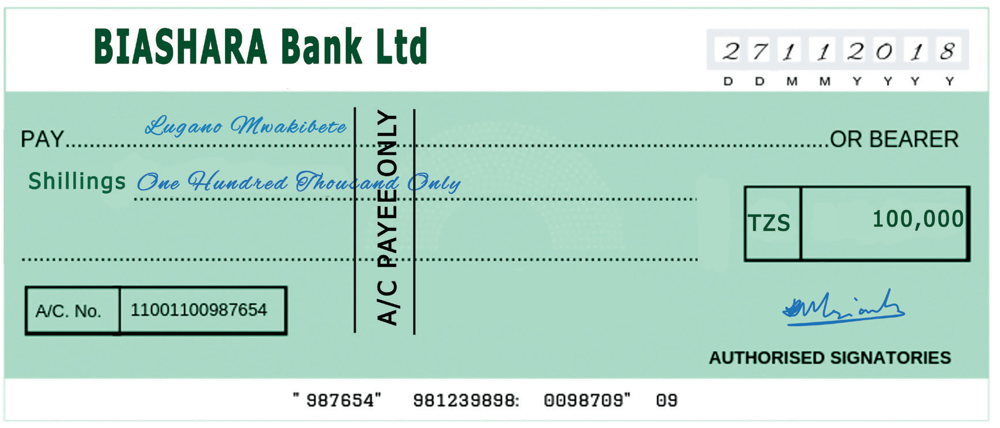

7
Student’s Book Form Two
Recording cash and banking transactions

Figure 1.4: Crossed Cheque with the words ‘A/C payee only’
Transacting using cheques is safe and
convenient because the trader does not
carry a lot of cash when making payments
or collecting money from customers.
The trader will be issuing cheques to
suppliers and collecting cheques from
customers. Banks normally keep records
of transactions on each of the customers’
bank accounts. On the other hand, the
customers will also have to make their
own records of transactions with banks.
Transactions made by the trader through
cheques, and other transactions between
the trader and the bank are recorded in a
bank account.
Recording transactions in the bank
account
To a business, a bank account is a type
of cash book in which transactions with a
bank are recorded. It therefore applies the
same rules of debit and credit that apply
in recording transactions in the cash
account. These are:
(a) Debit the bank account for transactions
that increase the bank balance, for
example, deposits of cheques.
(b) Credit the bank account for transactions that decrease the bank balance, for example issue of cheques.
When a cheque is received by the business,
there may be an option to present it for
payment (cash collection) from the drawer’s
bank or deposit the cheque in the business’
(payee’s) account, depending on the type of
cheque. For the purpose of this book, the
cheques received by the business, whether
open or crossed, are deposited into the
trader’s bank account.
To record a depositing of a cheque to
the businesses` bank account, one will
therefore debit the bank account and credit
the drawer`s account in the ledger.
It should also be remembered that when
the business operates more than one
account (either with the same bank or with
different banks), separate bank accounts
will have to be maintained in the ledger
for each such account.